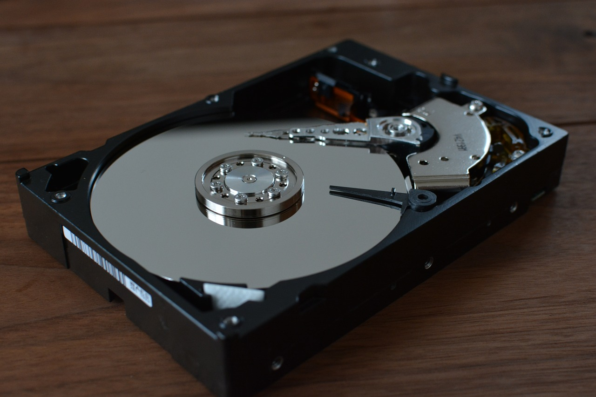
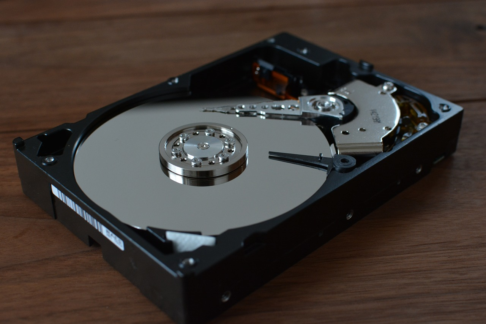

HDD, neboli Hard Disk Drive, je mechanické zařízení pro
ukládání dat, které se skládá z otáčejícího se disku a čtecí/vkládací hlavy.
Na disku jsou uloženy magnetické záznamy, které odpovídají jednotlivým datům. Čtecí/vkládací hlava se pohybuje nad diskem a přesně čte nebo zapisuje data na magnetické disky.
HDD disky jsou běžně k dispozici s kapacitami úložiště od několika gigabytů až po desítky terabytů. Rychlost čtení a zápisu dat závisí na otáčkách disku, kdy vyšší otáčky znamenají rychlejší čtení a zápis dat.
Zde je obrázek, který znázorňuje vnitřek běžného HDD disku:

Na obrázku můžete vidět otáčející se disk (vlevo) a čtecí/vkládací hlavu (vpravo).
Na disku jsou uloženy magnetické záznamy, které odpovídají jednotlivým datům. Čtecí/vkládací hlava se pohybuje nad diskem a přesně čte nebo zapisuje data na magnetické disky.
HDD disky jsou běžně k dispozici s kapacitami úložiště od několika gigabytů až po desítky terabytů. Rychlost čtení a zápisu dat závisí na otáčkách disku, kdy vyšší otáčky znamenají rychlejší čtení a zápis dat.
Zde je obrázek, který znázorňuje vnitřek běžného HDD disku:

Na obrázku můžete vidět otáčející se disk (vlevo) a čtecí/vkládací hlavu (vpravo).
SSD, neboli Solid State Drive, je elektronické úložiště,
které nepoužívá žádné pohyblivé části jako HDD. Namísto toho SSD používá NAND flash paměťové čipy,
podobné těm, které najdete v USB flash disků nebo v paměťových kartách.
SSD paměťové čipy jsou připojeny k řadiči, který umožňuje čtení a zápis dat na paměťové čipy. Protože SSD nemá pohyblivé části, je mnohem rychlejší než HDD, když se jedná o přístup k datům.
SSD disky jsou také mnohem spolehlivější než HDD, protože nemají mechanické části, které by mohly selhat. Tyto disky jsou obecně dražší než HDD, ale nabízejí rychlejší rychlosti čtení a zápisu, nižší spotřebu energie a menší rozměry.
Zde je obrázek, který znázorňuje vnitřek běžného SSD disku:
Na obrázku můžete vidět NAND flash paměťové čipy (vlevo) a řadič (vpravo), který je zapojen do SSD disku.
SSD paměťové čipy jsou připojeny k řadiči, který umožňuje čtení a zápis dat na paměťové čipy. Protože SSD nemá pohyblivé části, je mnohem rychlejší než HDD, když se jedná o přístup k datům.
SSD disky jsou také mnohem spolehlivější než HDD, protože nemají mechanické části, které by mohly selhat. Tyto disky jsou obecně dražší než HDD, ale nabízejí rychlejší rychlosti čtení a zápisu, nižší spotřebu energie a menší rozměry.
Zde je obrázek, který znázorňuje vnitřek běžného SSD disku:
Na obrázku můžete vidět NAND flash paměťové čipy (vlevo) a řadič (vpravo), který je zapojen do SSD disku.